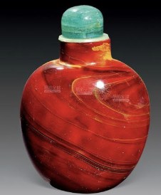
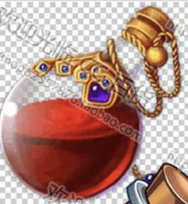
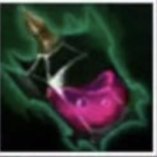
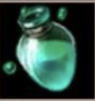
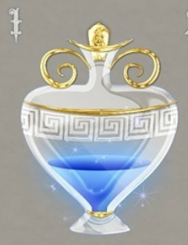
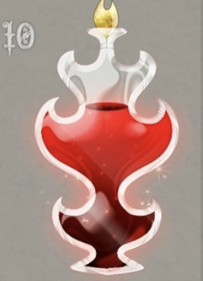
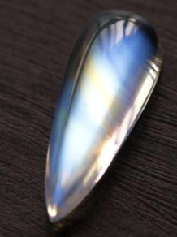
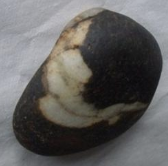
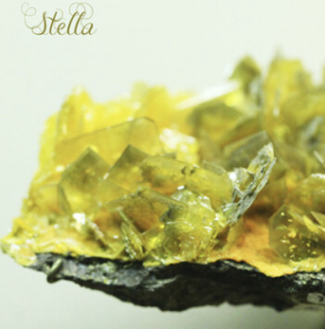
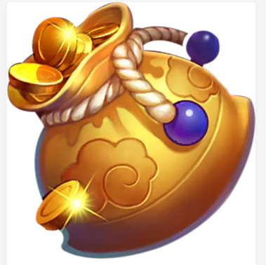

C级道具
具有一定价值，但只要愿意花钱买，总能买到的。 C级道具以丹药和石头为主，相对容易获得，但对修炼者的提升仍旧很大。
道具
| 道具名 | 图标 | 价格 | 作用 | 描述 |
|---|---|---|---|---|
| 回气丹 | 5～12 | 体质+5 | 修炼者必备，用于快速回复 | |
| 伤药 |  | 4～8 | 使用后抵消一次修为减少 | 务必理性用药 |
| 红药水 |  | 9～11 | 疯狂+3，体质+9 | 疯狂，躁动，反应 |
| 聚魔瓶 | 4～4 | 未知 | 闪烁着诡异的光泽 | |
| 增幅药剂 |  | 8～9 | 疯狂+2，你下次获取修为的时候，翻倍 | 俗称“大力丸” |
| 复合药 |  | 3～33 | 体质+2，疯狂-2，修为+10 | 家中常备 |
| 序列I |  | 3～33 | 50%概率获得4金币，10%概率幸运+1，0.2%概率获取100金币 | 梦幻 |
| 序列X |  | 7～17 | 消耗 | 做一次疯狂判定，取平方。70%失去修为，30%获得修为。若失去修为，会重新获得此物品。 |
| 月石 |  | 1～7 | 月光越盛，月石效果越强！ | 一闪一闪亮晶晶 |
| 邪气石 |  | 1～2 | 疯狂+3，每有5点疯狂，金币+1 | 黑暗府邸的产物 |
| 灵石 | 2～9 | 70%概率修为+100，30%概率+300 | 其中蕴含着灵气，只是不大好消化 | |
| 闪回石 |  | 7～9 | 疯狂-7，超过部分加体质 | 其上有闪电回文 |
| 小钱袋 |  | 1～6 | 投一颗骰子（1-6），获得对应数量的金币和疯狂。1、6会让你在此获得此道具 | 嘿，这是我的自来水厂 |
| 小树苗 | 2～9 | 种下五天后，小树苗就会成熟 | 众所周知~这是个收菜游戏 |